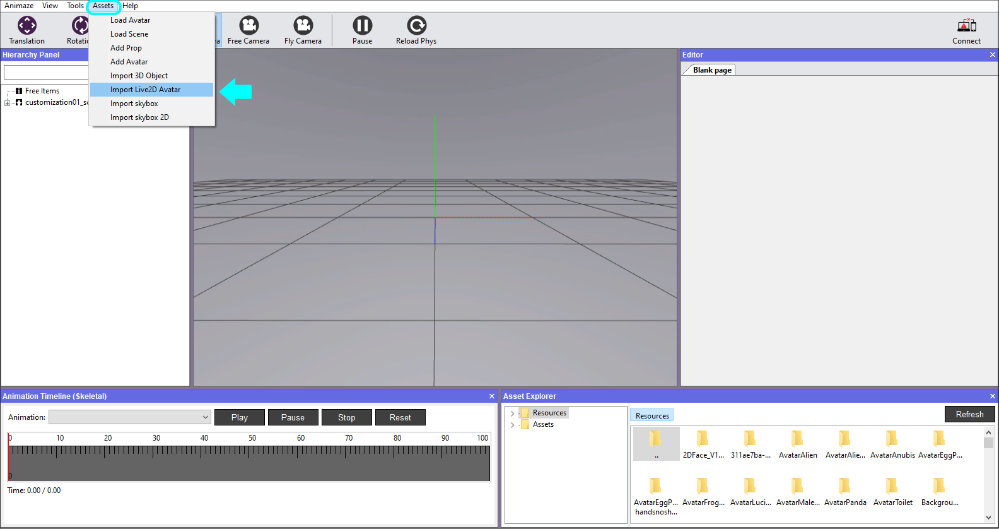
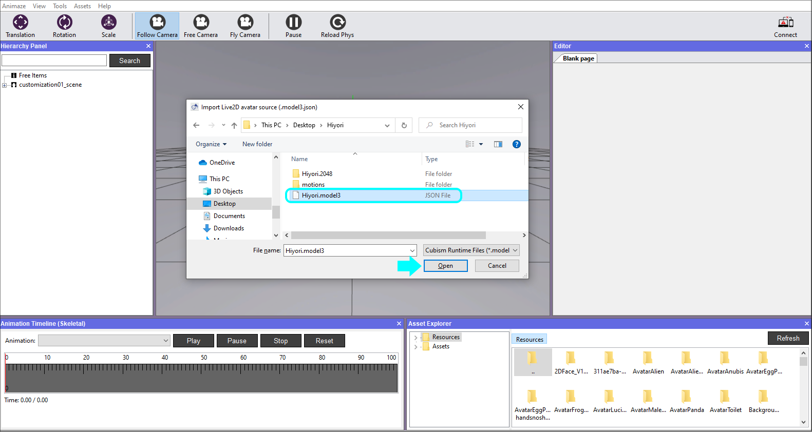
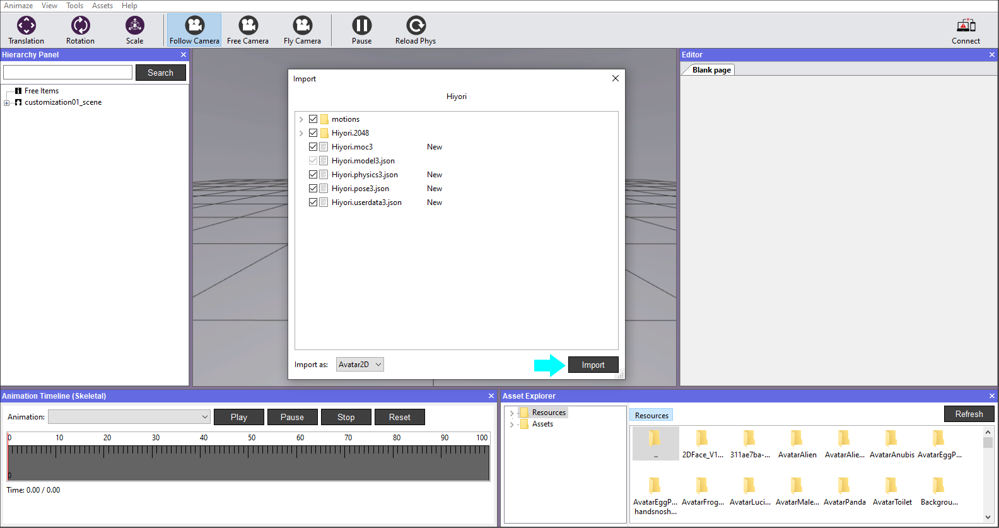
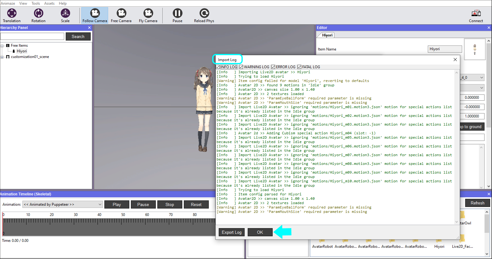
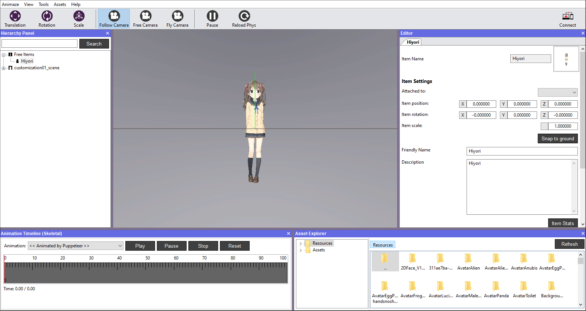

How can I import a custom 2D Avatar in the Animaze Editor?
The Animaze Editor is an authoring tool that enables artists, hobbyists, and professionals to add 2D content to the Animaze Avatar app. The Animaze platform supports Live2D runtime models that are exported from the Cubism Editor, as long as the runtime you export for is 3.0, 3.1, 3.2, 3.3 & 4.0.
Throughout this guide, we will use a sample model called Hiyori, which you can download here, to get you started with the Animaze Editor. We selected Hiyori as the sample model because it is a full-body model that contains special actions and physics.
To import the Hiyori sample model, follow the steps below:
1. Download Hiyori’s archive using this link and extract the files inside.
2. Open the Animaze Editor, navigate to Assets, and select Import Live2D Avatar

3. Select the model’s .json file and click open

4. The following window prompts you to select the files you want to import. If this is your first time importing a specific model, make sure all the files are ticked before clicking Import.

5. An import log will be displayed after the Animaze Editor checks the files for errors and warnings. If everything is green, you are good to go. Click Ok to dismiss the log.

6. Once the avatar is imported, it will be displayed in the viewport.

Now that you have imported the sample model, to learn how to make your own Live2D model using the Cubism Editor follow the steps listed here.